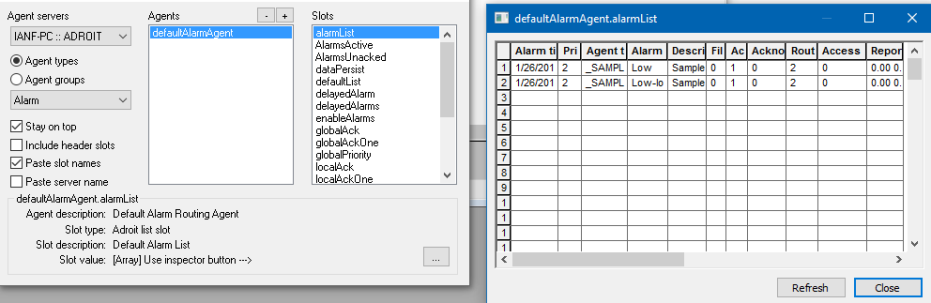

The Agent Browser is a utility that allows one to browse the agents and slots of an Agent Server. This displays the status slot names and tag (agent.slot) values besides the slot type, description of the currently selected agent and slot.
For details on connecting this utility to the required Agent Server, see Connecting to the required Agent Server.
Browsed agents and, if necessary, their slots are dynamically copied to the clipboard, so that it can be immediately pasted into any edit field in an Adroit user interface (or 3rd party application) that requires an agent (or agent.slot) entry.
To select an agent and slot using the Agent Browser
If the utility is launched with the /admin command line option, tag
values can be modified
To modify the value of a slot using the Agent Browser
Adding or Removing Agents Using the Agent Browser
This utility contains the following additional configuration checkbox options:
The information panel at the bottom of this dialog, has the following name \\AgentServerName\AgentType, where AgentServerName is the name of the connected Agent Server and AgentName is the name of the currently selected agent.
This displays the following information regarding the currently selected tag (agent.slot):
The value of the currently selected slot.
Note: When the selected slot is a LIST slot then a browse (...) button is displayed to the right of the slot value, which when clicked displays the contents of this LIST slot in a table with the required headings.

Double clicking an agent displays a dialog that allows you to view the real time status of an agent at a glance.
By default this displays a categorised view, for instance the Status category displays agent specific statuses, although you can check the Sorted checkbox to display an alphabetical listing.
You can also click the Previous / Next buttons (or use the PAGE UP / PAGE DOWN keys) to view other agents of the selected agent type.